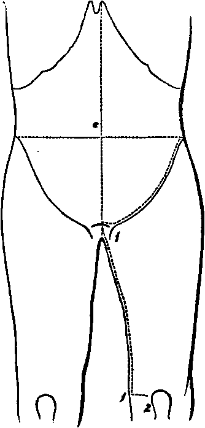

A Dissection To Expose The Obturator Nerve Completely
Description
This section is from the book "A Manual Of Dissections Of The Human Body", by R. E. Carrington. Also available from Amazon: A manual of dissections of the human body.
A Dissection To Expose The Obturator Nerve Completely
Position
The body supine, the thigh of the side dissected to be abducted, rotated out, and slightly flexed.
I
The Abdomen is to be opened by a crucial incision, and the lower flap on the side to be dissected removed by an incision parallel with and a little above the line of Poupart's ligament, then inwards to the median line, the other flaps to be turned outwards and fixed.
No. 14.
A. Skin.
B. Superficial fascia in two layers at the lower part.
1 Paragraphs A, B, C, D, E, F, G, H, K have been printed in smaller type because the anatomy of this flap is not an essential part of the dissection: nevertheless, it is a good plan to mention every structure divided or removed which is visible to the naked eye.
In the flap cut away there will be removed the following structures in layers, lettered A, B, C, D, E, F, G, H, K.1
Superficial Pudic artery and vein passing inwards over the cord.
Superficial Epigastric artery and vein passing upwards over the centre of Poupart's ligament. Superficial Circumflex Iliac artery and vein, sending twigs over the lower part of the Abdomen at the outer part.
Ilio-hypogastric nerve, cutaneous about one inch above the external Abdominal ring.
Ilio-inguinal nerve coming through the ring.
Lymphatic glands along Poupart's ligament.
One or two of the lower Anterior Cutaneous nerves accompanied by twigs of the Deep Epigastric artery.
The Spermatic cord emerging at the ring.
C. The aponeurosis of the External Oblique muscle, with the following parts:—
External ring above and outside the spine of the Pubes.
Intercolumnar fibres crossing transversely the lower fibres of the aponeurosis, which run downwards and inwards, and the fascia of the same name covering in the ring.
The Triangular fascia belongs to this muscle, but is seen in the next layer as it runs up beneath the inner pillar of the ring to the Linea alba.
The anterior layer of the sheath of the Rectus muscle is seen more internally, consisting partly of the aponeurosis of the External Oblique muscle and partly of the next.
D. The Internal Oblique muscle in its origin from about the outer half of Poupart's ligament and part of its origin from the crest of the Ilium, and in its insertion to the Linea alba and crest of the Pubes forming the rest of the anterior layer of the sheath of the Rectus muscle as far as half way between the Umbilicus and Pubic crest, but reinforced by the aponeurosis of the Transversalis muscle below that point. Above this the aponeurosis splits into two layers, one of which passes in front and one behind the Rectus muscle. The Conjoined tendon of this and the next succeeding muscle at its insertion, into the Ilio-pectineal line.
The Cremaster muscle in front of the cord.
Further portions of the Ilio-hypogastric and Ilio-inguinal nerves which lie between the Oblique muscles. A further portion of the cord.
E. The Transversalis muscle, in its origin from the outer third of Poupart's ligament, and part of its origin from the Iliac crest, and its insertion into the Linea alba and Pubic crest, forming the rest of the anterior layer of the sheath of the Rectus muscle below the point indicated, but above that extending into the Linea alba behind the muscle.
The fascia Transversalis outside the Conjoined tendon and its Infundibuliform process hiding the internal ring.
F. The Rectus and Pyramidalis muscles, the latter in front of the lower part of the former.
G. The fascia Transversalis.
The Deep Epigastric vessels running up internal to the ring and behind the Rectus muscle, giving off and receiving the Pubic branches.
The Deep Circumflex Iliac vessels, running out parallel with Poupart's ligament.
The obliterated Hypogastric artery, corresponding in its position with the Epigastric, but on its deep surface.
H. Subperitoneal fat. K. Peritoneum.
II
now dissect the part of the nerve in the thigh.
Skin Incisions
1. From the crest of the Pubes at the centre, down the Symphysis and along the inner part of the thigh to the posterior part of the internal Condyle of the Femur.
2. Transversely from the lower end of the preceding to the fore part of the Condyle. Reflect the flap outwards as far as the line of the Femoral artery.
This exposes the superficial fascia which below Poupart's ligament internal to the Saphenous vein, is found to consist of two layers. At this point it conceals the Saphenous opening, and being perforated by lymphatics is called the Cribriform fascia.1 This fascia contains the following—
1. The Long Saphenous vein, running up along the inner and front part of the thigh, and receiving at the upper part the Superficial Pudic, Epigastric, and Circumflex Iliac branches, and the cutaneous veins of the inner and back part of the thigh united into one trunk, which enters the Saphenous near the opening of that name. Sometimes the veins of the outer part of the thigh unite in a similar manner and join it near the same spot.
2. The cut ends of the Superficial Pudic, Epigastric, and Circumflex Iliac arteries, and a cutaneous twig of the Anastomotica Magna artery in front of the inner Condyle.
3. The branch of the Ilio-inguinal nerve to the skin of the upper and inner third of the thigh.
4. The Internal Cutaneous nerve perforating the fascia lata at the junction of the lower with the middle third. Smaller twigs of the nerve are cutaneous above this along the Saphenous vein, one or two about the Saphenous opening, and another half-way down.
5. Numerous lymphatic vessels in the front of the thigh, and a chain of glands along Poupart's ligament.
III
Remove and expose—
1. Poupart's and Gimbernat's ligaments.
2. The fascia lata of the thigh, presenting at the upper and inner part, immediately below Ponpart's ligament, the Saphenous opening.
Continue to:
- prev: A Dissection To Expose The Interosseous Artery. Continued
- Table of Contents
- next: A Dissection To Expose The Obturator Nerve. Continued